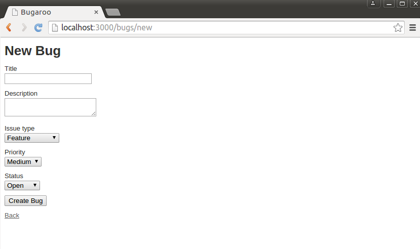

CIS 371 |
Bug Tracking |
Fall 2022 |
This assignment was originally designed by Prof. Engelsma
For this sequence of assignments, you will build a simple web application using a server-side application of your choice (Express, Rails, Flask, .etc) The framework must be server-side. You may not use client-side systems such as React, Angular, Vue, etc.
This is a solo assignment.
Please use this GithubClassroom URL: https://classroom.github.com/a/ENrW9Zfp
Part 1: Bug Overflow --- Modeling Bugs
Use what you have learned in class to create a single model called Bug that models
the bugs in a project. (Later you will add additional models to the app.) Bugs are represented with this
information:
- Title: a short descriptive title summarizing the problem.
- Description: a longer piece of text which describes the details of the problem.
- Issue_type: has three possible values: issue, enhancement, feature.
- Priority: priority of the issue with three possible levels: low, medium, high.
- Status: the current status of the bug with three possible settings: open, closed, monitor.
Generate basic screens for managing bugs (list of all bugs, show bug, edit bug, and delete bug).
Use sqlite3 or some other "real" database. Don't use my fake "in-memory" DB.
Pay little attention to styling at this point (e.g. you need not write fancy CSS/SCSS files). Your final product should look somewhat like the screenshots inserted below:


Grading
This part of the assignment will be graded by demo. When your project is ready, schedule a demonstration with me.
Part 2: Bug Overflow --- Associating Users With Bugs
In this part of the assignment you will extend the Bug Overflow application that you started in the previous
section by adding a User model to the app and associating users and bugs.
Users typically report bugs, so we need to have a model for users. In this iteration of the application, add an additional model for users. For each user you should have the following fields:
- lname: user’s last name.
- fname: user’s first name.
- email: user’s email address.
- thumbnail: a reference to the user’s thumbnail image.
Generate the model and basic screens for managing users. (list of all users, show user, edit user, and delete user).
Using the TDD approach outlined in lecture, write the automated tests and then implement the following model requirements:
- lname, fname, email cannot be blank whenever an author is created or edited.
- email must be unique and be a valid format for an email address.
- thumbnail must end with either .png, .jpg, or .gif. It is ok to leave the thumbnail field blank.
Formally model the association between users and bugs so that every bug is owned by a single user, and a single user may own many bugs. In addition, make sure you modify the appropriate bug views so that a user can be specified when a bug is entered/updated, or shown in the bug listing or bug detail views. Make sure that you present users as "Firstname Lastname" when they are shown in views.
Bugs should reference their user by the user's primary key (e.g., the id). Don't link Bugs to user by the user's name, since names aren't necessarily unique.
Pay little attention to styling at this point (e.g. you need not write much CSS/SCCS). Your final product should look like the screenshots inserted below. Your user views (not shown below) should also be fully functional.


Grading
This part of the assignment will be graded both demo and source code evaluation.
When your code is ready, please commit it with the message [grade me 2]. Then schedule a demonstration time with me.
Part 3: Bootstrap
In this part you will focus on making your Bugs Overflow app more attractive using a responsive frontend framework of your choice. Use what you learned in lecture to dress up your app using Bootstrap (or an alternate frontend framework of your choice: Foundation, etc.) Here are the general requirements your solution needs to meet:
- Make your site support a universal navigation scheme with links to Home, Users, Bugs.
- Add a placeholder “splash” or homepage to your app, and make it your root page. Format the home page in an attractive manner and make sure it somehow features blurbs with links to the 3 most recently entered bugs.
- Style all of the view templates for one of your entity types (either bugs or users).
You have some freedom to style as you see fit, but do make sure each view is reasonably attractive and fully responsive.
Important: If you prefer, you can use Bootstrap to style your React app instead.Deliverables:
Updated Thursday, 17 November 2022, 2:14 PM